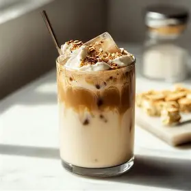
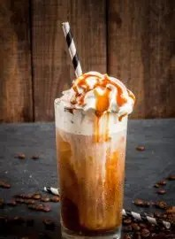

Coffee Journal

Latte
Espresso combined with steamed milk and a light layer of foam.
$10

Butterscotch Latte
Espresso blended with creamy milk and sweet butterscotch flavor.
$12
Coffee Guide
| Coffee | Price |
|---|---|
| Latte | $10 |
| Butterscotch Latte | $12 |